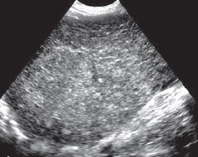
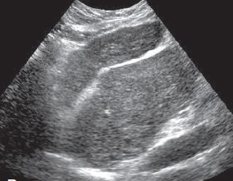
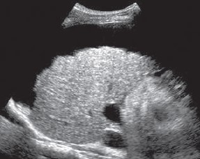

Cirrhosis
Cirrhosis refers to a difuse process characterized by fibrosis and the conversion of normal liver architecture into structurally abnormal nodules.
Various insults can injure the liver, including viral infections, toxins, hereditary conditions, or autoimmune processes. With each injury, the liver initially forms scar tissue (fibrosis) without losing its function. After a chronic injury, most of the liver tissue becomes fibrotic, leading to loss of function and the development of cirrhosis.
Clinical presentation
The classic clinical presentation of cirrhosis is hepatomegaly, jaundice, and ascites. However, early serious liver injury may be present without any clinical clues and the disease may not be detected until liver damage is extensive. These early symptoms may include;
- Fatigue and weakness
- Loss of appetite or unexplained weight loss
- Pain in the upper right abdomen
- Nausea and/or vomiting
- Easy bruising or bleeding
- Itchy skin
- Redness on the palms of the hands
- Spider-like blood vessels on the skin
Ultrasound features
- Volume redistribution.
In the early stages of cirrhosis the liver may be enlarged, whereas in advanced stages the liver is often small, with relative enlargement of the caudate lobe, let lobe, or both, compared with the right lobe. The ratio of caudate to right lobe (C/RL) of 0.65 is indicative for cirrhosis with a specificity of 100% - Coarse echotexture
- Nodular surface.
This correspond to presence of regenerating nodules and fibrosis - Regenerating nodules.
Regenerating nodules tend to be isoechoic or hypoechoic with a thin, echogenic border that corresponds to fibrofatty connective tissue. Because regenerating nodules have a similar architecture to the normal liver, ultrasound have limited ability to detect them. - Portal hypertension: Ascites, Splenomegaly and Varices

Figure 1

Figure 2

Figure 3